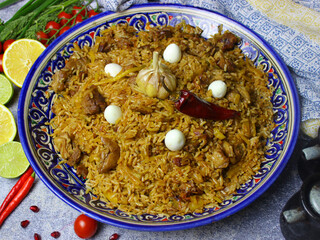

Ash

Plov (Плов) is a hearty dish made from deep fried meat and vegetables, over which rice is cooked. Plov is considered a national dish in many countries of Central Asia and the Near and Middle East ‒ Iran, Tajikistan, Uzbekistan, and Afghanistan.
Ingregients
- Rice
- Beef
- Lamb
- Carrots
- Onions
Steps
- In a heavy dutch oven pot, sear the meat and drain any excess foam. Rinse if necessary. Pour 4 cups of water over the beef and simmer for 1 hour until tender.
- Remove beef and drain the water into a measuring cup. Add additional water to make 4 cups in total. Set aside.
- Wipe pot clean and add oil, carrots and onion. Sauté for 15 minutes over medium-high heat. Bring the beef pieces back into the pot and add spices. Mix thoroughly.
- Top with rice and a head of garlic. Pour reserved water from the beef over the rice and lightly shake to avoid any stirring. Bring everything to a light boil then cover and simmer for 30 minutes covered.